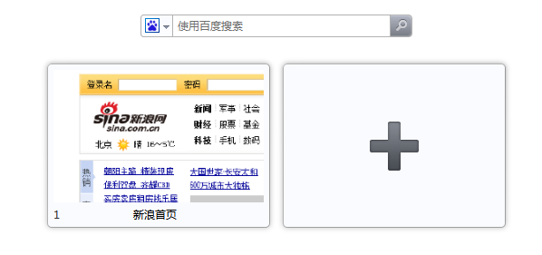

一个用户如果把一个网站放进快速拨号中，通常，快速拨号会显示整个网站页面的缩略图。
可能大多数用户不以为然，但如果我是站长，一定会很不爽的，看下面这个多难看啊!

首次安装Opera后，会看到很多网站，在快速拨号中都有自己特定的缩略图，为什么我的网站不能这样做呢？
之前，Opera可以让站长们对快速拨号中的内容做一些个性化的定制，比如这个天气的。但是灵活性仍然有限。
在11.10中，快速拨号中的缩略图的定制明显丰富了很多，你不仅可以在指定快速拨号中显示的图形，甚至还能在快速拨号中使用CSS，或者通过服务器端的控制来在快速拨号中输出特定的内容。
神奇吧！
今天我就来告诉站长们如何来定制自己的网站的快速拨号缩略图！
第一部分，把定制的图片放进快速拨号缩略图
1. 第一步当然是做一张你喜欢的图片了
图片的大小要求往下看
2. 在HTML5中使用图标
这个方法和添加书签图标的方法非常像，早在1999年的IE5中，就可以为书签添加图标了。尽管那不是HTML4的规格，但是浏览器都支持了这个功能。icon变成了rel属性的一个内容。苹果公司甚至在这个属性上发展了apple-touch-icon。
在HTML5的规格中，icon已经成为了rel属性的一个值。
3. 如何在网站中添加快速拨号的图片呢？
非常简单，只要在网页的<head>中加入<link>标签就可以了，就像下面的代码这样，图片的地址可以链到任何地方。
<head>
<title>My Opera</title>
<link rel="icon" type="image/png" href="http://path/to/logo.png">
</head>
上面的代码中会看到rel=”icon”，但它并不会影响网站的favicon图标。因为我们知道，让网站显示favicon，直接把favicon.ico放进网站根目录就可以了。
图片的要求：
- 宽高最少要达到114px。这个是图片的最小要求了，如果太小那就会被Opera忽略掉(你不想让Opera那么大的快速拨号，只显示那么寒碜的一个小图标吧)。
- 图片可以用PNG、JPEG或者是GIF，目前还不能支持SVG，如果是动态图片，只能显示第一帧的图片。
默认的图片大小是宽256px，高160px的图片，太大的图片会自动进行适配。用户也可以到Opera:config中来设置默认的最大图片和最小图片(demo)。
另外Opera还很传奇的支持了apple-touch-icon、 apple-touch-icon-precomposed和 image_src(但是考虑到那些图片的大小，可能显示出来的不多)
4. 为快速拨号缩略图设置多张图片
这个功能非常好用，有的时候咱可能希望在书签中保存的图片和快速拨号中保存的图片都用不同的。
<head>
<title>My Opera</title>
<link rel="icon" type="image/png" href="http://path/to/128x128image.png">
<!-- This will be the speed dial icon -->
<link rel="icon" type="image/png" href="http://path/to/200x200image.png">
</head>如果设置了多个图片，Opera通常会显示最大的那个(demo)。如果两个大小都一样，那Opera会选择第一个(demo)。
第二部分，除了图片以外，还可以定制更多
刚才简单提到了如何使用图片，11.10中，可以用的东西更多。例如CSS的view-mode:minimized，X-purposes header，还可以控制自动刷新频率(以前Opera就可以自动刷新的，但是这次把选择权交给了站长的你)
1. CSS中的 view-mode: minimized

如果你是专业的前端工程师，相信你更喜欢在CSS中来控制各种样式的输出，对于快速拨号也可以用CSS。
Opera用view-mode定义了快速拨号中内容显示的方法。通过它，咱可以对快速拨号的样式做更多的控制。无论你的样式有多丰富，都必须在@media下面，看下面的代码。
@media screen and (view-mode: minimized) {
body {
color: #fff;
background: #b20000;
}
}在link中链入控制快速拨号的CSS文件时，必须加上media=”(view-mode:minimized)“，就像下面的代码这样。
<link rel=stylesheet type="text/css" href="minimizedstyles.css" media="(view-mode:minimized)">请大家不要忘了，所有的内容都必须在宽256px，高160px的范围内显示，这里有一个样本。
2. 使用X-Purpose Header
虽然载入快速拨号的URL是唯一的，但不代表咱只能为Opera的快速拨号提供唯一的内容。在11.10中Opera在添加快速拨号时会向网站发出请求，Opera 11.10 中的请求包括一个额外的X-Purpose: preview。
下面是请求的具体内容:
GET / HTTP/1.1
Host: www.bbc.co.uk/news
X-Purpose: preview
User-agent: Opera/9.80 (Macintosh; Intel Mac OS X 10.6.6; U; en) Presto/2.8.99 Version/11.10在Opera检测header的过程中，可以选择，为Opera提供另外一个URL,这样就可以防止一些文件被发送到快速拨号中。想想一下一个门户网站的首页有多少多余的文件啊，如果能提供一个内容更少的URL能大大减小带宽的需求。
但是不要担心，这不会影响用户点击快速拨号后的动作，当用户点击快速拨号后，仍然会进入用户设置好的URL的内容。
下面是一个示例，使用了Apache把访问导向到/preview.html这个文件中(当然现实操作中可能会更加复杂，这要看你的网站文件的路径设置了)。
RewriteEngine On
RewriteCond %{HTTP:X-Purpose} ^preview$
RewriteRule ^(.*) /preview.html此外，也可以使用服务器端的语言来做同样的事情，可以参考一下下面的PHP代码。
<?php
if ($_SERVER['HTTP_X_PURPOSE'] == 'preview') {
// Send Speed Dial content
} else {
// Send regular content
}
?>3.自动刷新频率的控制
如果想让网站在快速拨号变得更加动态，可以制定一个自动刷新频率。有两种方法。
- 第一种使用<meta> ?(这个不用多说了吧)
<meta http-equiv="preview-refresh" content="3600">
- 第二种在http response中设定一个
Preview-Refresh参数Preview-Refresh:3600
上面两段代码中的单位都是秒，3600秒也就是1个小时了。
第三部分，快速拨号的优先顺序
上面的文章中说了很多方法，那么如果我即添加图片，又放一些CSS上去怎么办呢？
Opera对快速拨号中内容的选择顺序是:
1. X-Purpose: preview 返回的服务器响应
＞ 2.link rel=”icon” 指定的图标
＞ 3.页面重要区域，比如 logo
＞ 4.css view-mode: minimized
＞ 5.旧版风格，完整页面缩略图
Comments
The forum archive of this article is still available on My Opera.
No new comments accepted.